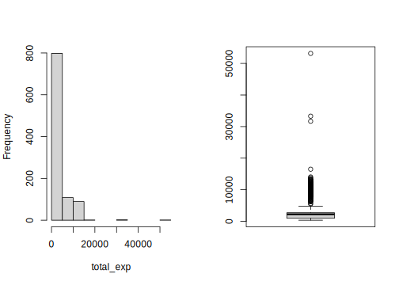

9.1 Ordinary Least Square
For a typical linear regression with \(p\) explanatory variables, we have a linear combinations of these variables:
\[f(\mathbf{X})=\mathbf{X}\mathbf{\beta}=\beta_{0}+\sum_{j=1}^{p}\mathbf{x_{.j}}\beta_{j}\]
where \(\mathbf{\beta}\) is the parameter vector with length \(p+1\). Here we use \(\mathbf{x_{.j}}\) for column vector and \(\mathbf{x_{i.}}\) for row vector. Least square is the method to find a set of value for \(\mathbf{\beta^{T}}=(\beta_{0},\beta_{1},...,\beta_{p})\) such that it minimizes the residual sum of square (RSS):
\[RSS(\beta)=\sum_{i=1}^{N}(y_{i}-f(\mathbf{x_{i.}}))^{2}=\sum_{i=1}^{N}(y_{i}-\beta_{0}-\sum_{j=1}^{p}x_{ij}\beta_{j})^{2}\]
The process of finding a set of values has been implemented in R. Now let’s load the data:
dat <- read.csv("http://bit.ly/2P5gTw4")Before fitting the model, we need to clean the data, such as removing bad data points that are not logical (negative expense).
dat <- subset(dat, store_exp > 0 & online_exp > 0)Use 10 survey question variables as our explanatory variables.
modeldat <- dat[, grep("Q", names(dat))]The response variable is the sum of in-store spending and online spending.
# total expense = in store expense + online expense
modeldat$total_exp <- dat$store_exp + dat$online_expTo fit a linear regression model, let us first check if there are any missing values or outliers:
par(mfrow = c(1, 2))
hist(modeldat$total_exp, main = "", xlab = "total_exp")
boxplot(modeldat$total_exp)
There is no missing value in the response variable, but there are outliers. Outliers are usually best described by the problem to solve itself such that we know from domain knowledge that it is not possible to have such values. We can also use a statistical threshold to remove extremely large or small outlier values from the data. We use the Z-score to find and remove outliers described in section 5.5. Readers can refer to the section for more detail.
y <- modeldat$total_exp
# Find data points with Z-score larger than 3.5
zs <- (y - mean(y))/mad(y)
modeldat <- modeldat[-which(zs > 3.5), ]We will not perform log-transformation for the response variable at this stage. Let us first check the correlation among explanatory variables:
correlation <- cor(modeldat[, grep("Q", names(modeldat))])
corrplot::corrplot.mixed(correlation, order = "hclust", tl.pos = "lt",
upper = "ellipse")
FIGURE 9.1: Correlation Matrix Plot for Explanatory Variables
As shown in figure 9.1, there are some highly correlated variables. Let us use the method described in section 5.6 to find potential highly correlated explanatory variables to remove with a threshold of 0.75:
highcor <- findCorrelation(correlation, cutoff = 0.75)modeldat <- modeldat[, -highcor]The dataset is now ready to fit a linear regression model. The standard format to define a regression in R is:
response variable is at the left side of
~the explanatory variables are at the right side of
~if all the variables in the dataset except the response variable are included in the model, we can use
.at the right side of~if we want to consider the interaction between two variables such as Q1 and Q2, we can add an interaction term
Q1*Q2transformation of variables can be added directly to variable names such as
log(total_exp).
lmfit <- lm(log(total_exp) ~ ., data = modeldat)
summary(lmfit)##
## Call:
## lm(formula = log(total_exp) ~ ., data = modeldat)
##
## Residuals:
## Min 1Q Median 3Q Max
## -1.1749 -0.1372 0.0128 0.1416 0.5623
##
## Coefficients:
## Estimate Std. Error t value Pr(>|t|)
## (Intercept) 8.09831 0.05429 149.18 < 2e-16 ***
## Q1 -0.14534 0.00882 -16.47 < 2e-16 ***
## Q2 0.10228 0.01949 5.25 2.0e-07 ***
## Q3 0.25445 0.01835 13.87 < 2e-16 ***
## Q6 -0.22768 0.01152 -19.76 < 2e-16 ***
## Q8 -0.09071 0.01650 -5.50 5.2e-08 ***
## ---
## Signif. codes:
## 0 '***' 0.001 '**' 0.01 '*' 0.05 '.' 0.1 ' ' 1
##
## Residual standard error: 0.226 on 805 degrees of freedom
## Multiple R-squared: 0.854, Adjusted R-squared: 0.853
## F-statistic: 943 on 5 and 805 DF, p-value: <2e-16The summary(lmfit) presents a summary of the model fit. It shows the point estimate of each explanatory variable (the Estimate column), their corresponding standard error (the Std. Error column), t values (t value), and p values (Pr(>|t|)).
9.1.1 The Magic P-value
Let us pause a little to have a short discussion about p-value. Misuse of p-value is common in many research fields. There were heated discussions about P-value in the past. Siegfried commented in his 2010 Science News article:
“It’s science’s dirtiest secret: The scientific method of testing hypotheses by statistical analysis stands on a flimsy foundation.”
American Statistical Association (i.e., ASA) released an official statement on p-value in 2016 (Ronald L. Wassersteina 2016). It was the first time to have an organization level announcement about p-value. ASA stated that the goal to release this guidance was to
“improve the conduct and interpretation of quantitative science and inform the growing emphasis on reproducibility of science research.”
The statement also noted that
“the increased quantification of scientific research and a proliferation of large, complex data sets has expanded the scope for statistics and the importance of appropriately chosen techniques, properly conducted analyses, and correct interpretation.”
The statement’s six principles, many of which address misconceptions and misuse of the P-value, are the following:
- P-values can indicate how incompatible the data are with a specified statistical model.
- P-values do not measure the probability that the studied hypothesis is true or the probability that the data were produced by random chance alone.
- Scientific conclusions and business or policy decisions should not be based only on whether a p-value passes a specific threshold.
- Proper inference requires full reporting and transparency.
- A p-value, or statistical significance, does not measure the size of an effect or the importance of a result.
- By itself, a p-value does not provide a good measure of evidence regarding a model or hypothesis.
The \(p = 0.05\) threshold is not based on any scientific calculation but is an arbitrary number. It means that practitioners can use a different threshold if they think it better fits the problem to solve. We do not promote p-value in this book. However, the p-value is hard to avoid in classical statistical inference. In practice, when making classic statistical inferences, we recommend reporting confidence interval whenever possible instead of P-value.
The Bayesian paradigm is an alternative to the classical paradigm. A Bayesian can state probabilities about the parameters, which are considered random variables. However, it is not possible in the classical paradigm. In our work, we use hierarchical (generalize) linear models in practice instead of classical linear regression. Hierarchical models pool information across clusters (for example, you can treat each customer segment as a cluster). This pooling tends to improve estimates of each cluster, especially when sampling is imbalanced. Because the models automatically cope with differing uncertainty introduced by sampling imbalance (bigger cluster has smaller variance), it prevents over-sampled clusters from unfairly dominating inference.
This book does not cover the Bayesian framework. The best applied Bayesian book is Statistical Rethinking by Richard McElreath (McElreath 2020). The book provides outstanding conceptual explanations and a wide range of models from simple to advanced with detailed, repeatable code. The text uses R, but there are code examples for Python and Julia on the book website.
Now let us come back to our example. We will not spend too much time on p-values, while we will focus on the confidence interval for the parameter estimate for each explanatory variable. In R, the function confint() can produce the confidence interval for each parameter:
confint(lmfit,level=0.9)## 5 % 95 %
## (Intercept) 8.00892 8.18771
## Q1 -0.15987 -0.13081
## Q2 0.07018 0.13437
## Q3 0.22424 0.28466
## Q6 -0.24665 -0.20871
## Q8 -0.11787 -0.06354The above output is for a 90% confidence level as level=0.9 indicated in the function call. We can change the confidence level by adjusting the level setting.
Fitting a linear regression is so easy using R that many analysts directly write reports without thinking about whether the model is meaningful. On the other hand, we can easily use R to check model assumptions. In the following sections, we will introduce a few commonly used diagnostic methods for linear regression to check whether the model assumptions are reasonable.
9.1.2 Diagnostics for Linear Regression
In linear regression , we would like the Ordinary Least Square (OLS) estimate to be the Best Linear Unbiased Estimate (BLUE). In other words, we hope the expected value of the estimate is the actual parameter value (i.e., unbiased) and achieving minimized residual (i.e., best). Based on the Gauss-Markov theorem, the OLS estimate is BLUE under the following conditions:
Explanatory variables (\(\mathbf{x_{.j}}\)) and random error (\(\mathbf{\epsilon}\)) are independent: \(cov(\mathbf{x_{.j},\epsilon})=0\) for \(\forall j=j\in1...p\).
The expected value of random error is zero: \(E(\mathbf{\epsilon|X})=0\)
Random errors are uncorrelated with each other, and the variance of random error is consistent: \(Var(\mathbf{\epsilon})=\sigma^{2}I\), where \(\sigma\) is positive and \(I\) is a \(n \times n\) identical matrix.
We will introduce four graphic diagnostics for the above assumptions.
- Residual plot
It is a scatter plot with residual on the Y-axis and fitted value on the X-axis. We can also put any of the explanatory variables on the X-axis. Under the assumption, residuals are randomly distributed, and we need to check the following:
- Are residuals centered around zero?
- Are there any patterns in the residual plots (such as residuals with x-values farther from \(\bar{x}\) have greater variance than residuals with x-values closer to \(\bar{x}\))?
- Are the variances of the residual consistent across a range of fitted values?
Please note that even if the variance is not consistent, the regression parameter’s point estimate is still unbiased. However, the variance estimate is not unbiased. Because the significant test for regression parameters is based on the random error distribution, these tests are no longer valid if the variance is not constant.
- Normal quantile-quantile Plot (Q-Q Plot)
Q-Q Plot is used to check the normality assumption for the residual. For normally distributed residuals, the data points should follow a straight line along the Q-Q plot. The more departure from a straight line, the more departure from a normal distribution for the residual.
- Standardized residuals plot
Standardized residual is the residual normalized by an estimate of its standard deviation. Like the residual plot, the X-axis is still the fitted value, but the y-axis is now standardized residuals. Because of the normalization, the y-axis shows the number of standard deviations from zero. A value greater than 2 or less than -2 indicates observations with large standardized residuals. The plot is useful because when the variance is not consistent, it can be difficult to detect the outliers using the raw residuals plot.
- Cook’s distance
Cook’s distance can check influential points in OLS based linear regression models. In general, we need to pay attention to data points with Cook’s distance > 0.5.
In R, these diagnostic graphs are built in the plot() function.
par(mfrow = c(2, 2))
plot(lmfit, which = 1)
plot(lmfit, which = 2)
plot(lmfit, which = 3)
plot(lmfit, which = 4)
FIGURE 9.2: Linear Regression Diagnostic Plots: residual plot (top left), Q-Q plot (top right), standardized residuals plot (lower left), Cook’s distance (lower right)
The above diagnostic plot examples show:
Residual plot: residuals are generally distributed around \(y=0\) horizontal line. There are no significant trends or patterns in this residual plot (there are two bumps but does not seem too severe). So the linear relationship assumption between the response variable and explanatory variables is reasonable.
Q-Q plot: data points are pretty much along the diagonal line of Y=X, indicating no significant normality assumption departure for the residuals. Because we simulate the data, we know the response variable before log transformation follows a normal distribution. The shape of the distribution does not deviate from a normal distribution too much after log transformation.
Note that the Gauss-Markov theorem does not require normality. We need the normal assumption to look for significant factors or define a confidence interval. However, as Andrew Gelman pointed out in section 3.6 of his book (Gelman and Hill 2006), normality and equal variance are typically minor concerns.
- Standardized residual plot: if the constant variance assumption is valid, then the plot’s data points should be randomly distributed around the horizontal line. We can see there are three outliers on the plot. Let us check those points:
modeldat[which(row.names(modeldat) %in% c(960, 678, 155)), ]## Q1 Q2 Q3 Q6 Q8 total_exp
## 155 4 2 1 4 4 351.9
## 678 2 1 1 1 2 1087.3
## 960 2 1 1 1 3 658.3It is not easy to see why those records are outliers from the above output. It will be clear conditional on the independent variables (Q1, Q2, Q3, Q6, and Q8). Let us examine the value of total_exp for samples with the same Q1, Q2, Q3, Q6, and Q8 answers as the 3rd row above.
datcheck = modeldat %>%
filter(Q1 ==2 & Q2 == 1 & Q3 == 1 & Q6 == 1 & Q8 == 3)
nrow(datcheck)## [1] 87There are 87 samples with the same values of independent variables. The response variable’s (total_exp) distribution is:
summary(datcheck$total_exp)## Min. 1st Qu. Median Mean 3rd Qu. Max.
## 658 1884 2215 2204 2554 3197Now it is easy to see why row 960 with total_exp = 658.3 is an outlier. All the other 86 records with the same survey responses have a much higher total expense!
- Cook’s distance: the maximum of Cook’s distance is around 0.05. Even though the graph does not have any point with Cook’s distance of more than 0.5, we could spot some outliers.
The graphs suggest some outliers, but it is our decision what to do. We can either remove it or investigate it further. If the values are not due to any data error, we should consider them in our analysis.